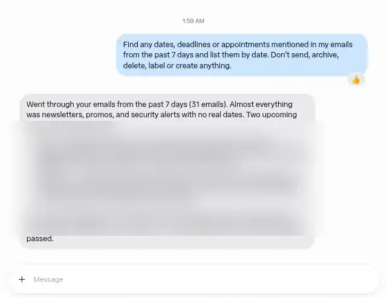
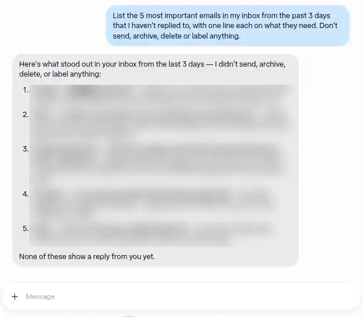
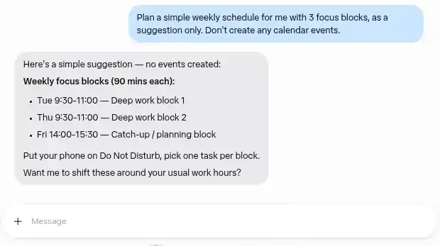

Getting Started with Muse, Meta's Personal AI Agent (and Using My Invite Code)
Muse is Meta's personal AI agent. It's for people 18 and older in the US, and it has reportedly expanded to Canada (iPhone in Canada, Sep 18). If you're somewhere else, this guide won't help yet.
Disclosure: this guide includes my referral code. If you redeem it, you and I both get bonus Muse tokens. The guide works just as well if you skip the code. Jump to the code
Below are three things I tried, with screenshots (personal details blurred), then how to join and redeem the code.
Three things I tried
1. Find dates and deadlines in your recent emails
This one needs Gmail connected.
What I typed:
Find any dates, deadlines or appointments mentioned in my emails from the past 7 days and list them by date. Don't send, archive, delete, label or create anything.
What happened: Muse went through my emails from the past 7 days and listed the upcoming dates it found. It also noted that most of that mail was newsletters, promos and security alerts with no real dates.

2. List important emails that still need a reply
What I typed:
List the 5 most important emails in my inbox from the past 3 days that I haven't replied to, with one line each on what they need. Don't send, archive, delete or label anything.
What happened: It gave me a numbered list of five emails with one line each on what they need, and confirmed it hadn't sent, archived, deleted or labeled anything.

3. Suggest a weekly schedule
What I typed:
Plan a simple weekly schedule for me with 3 focus blocks, as a suggestion only. Don't create any calendar events.
What happened: It suggested three 90-minute blocks across the week and asked if I wanted them moved around my usual work hours. It didn't create any events. Google Calendar is listed as a connector, but I didn't connect it for this test.

A tip from doing these: I added "don't send, archive, delete or label anything" to each request. It kept my first tries read-only.
How to join and redeem the code
- Check that you qualify. You need to be 18 or older and in the US. It has also reportedly expanded to Canada.
- Sign up at https://muse.ai/join.
- Within 48 hours of joining, open Settings and choose "Redeem invite code".
- A "Redeem a code" window opens. Paste the code into the "Invite code" field and confirm.
1HU8SO
When it's redeemed, we both get bonus Muse tokens. The 48-hour window is easy to miss, so I'd do it right after signing up.
FAQ
Does it cost anything?
There's a free plan with usage limits. Meta's help center also lists two paid plans: Power at $20/month and Maximum at $100/month (listed in US dollars), each with more weekly usage, renewing monthly until you cancel. My free plan didn't show any payment method.
What can it connect to?
In the connector list I saw Gmail, Google Calendar, Instagram and Instagram Messages. For these tests I only connected Gmail.
What about privacy?
Here's what Meta says in its launch post: Muse runs on its own isolated cloud computer, and it can't see your passwords or payment methods. You choose which apps it connects to and how much access each one gets, and you can disconnect them at any time. You can opt out of having your interactions used to train Meta's AI, and Meta says your Muse conversations aren't shared with its ad systems. My advice: connect one app at a time and read what each permission allows.
What does the invite code give me?
Bonus Muse tokens for you and for me, if you redeem it in Settings within 48 hours of joining. It doesn't change who's eligible.
If you try it, start with one small, real task and see how it goes.